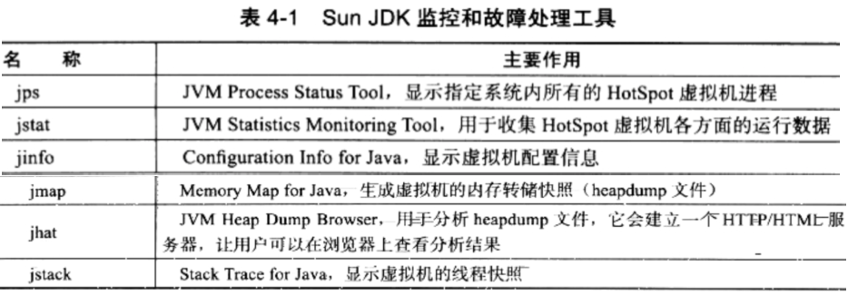
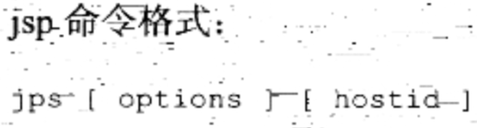
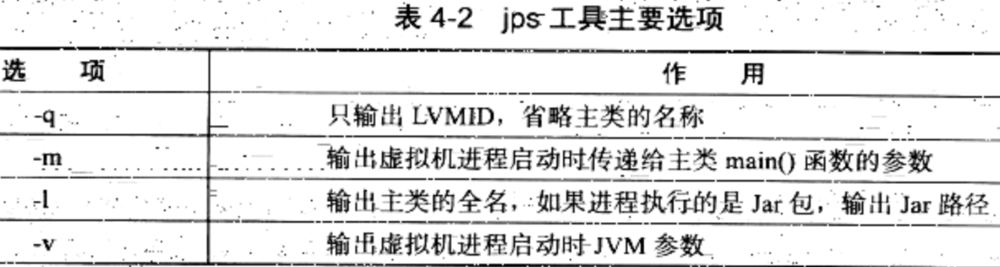
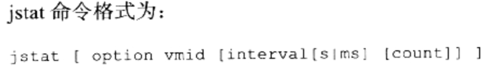
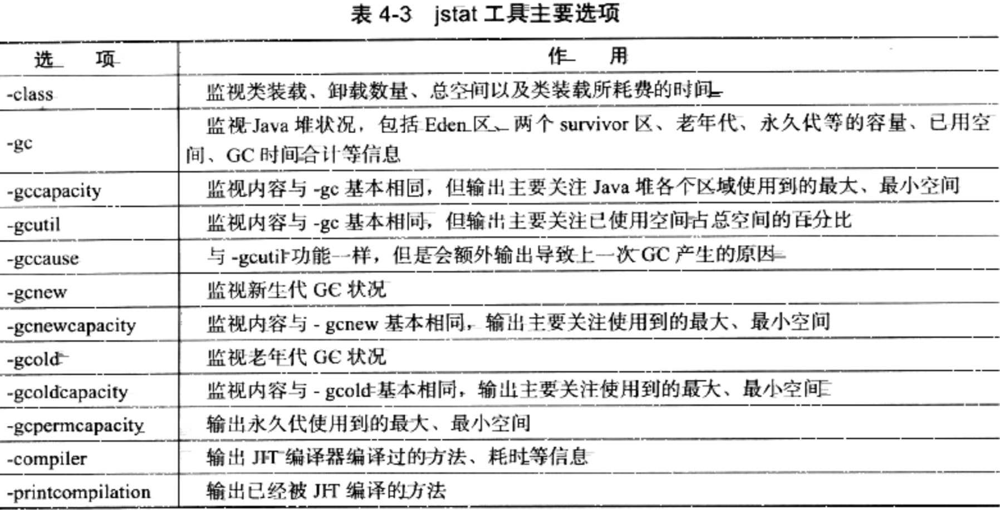
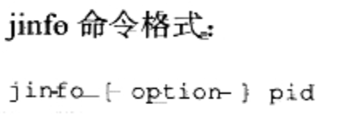
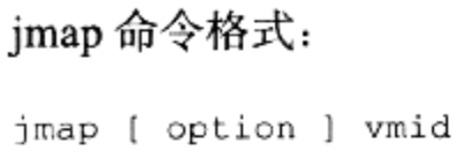
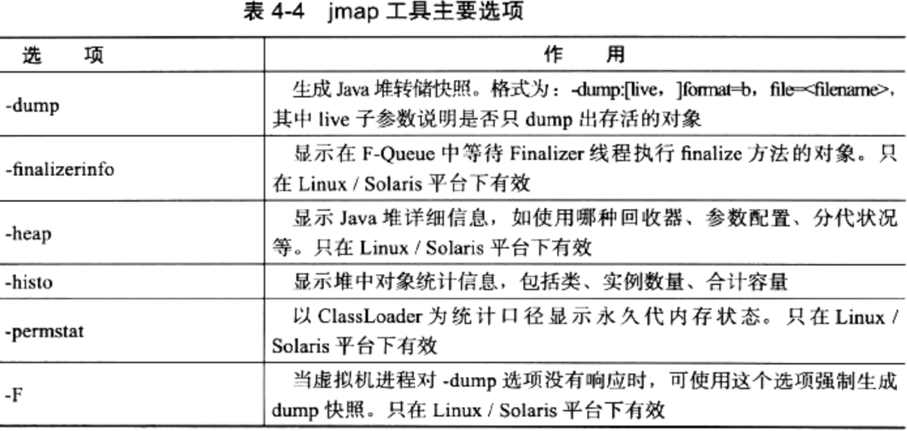
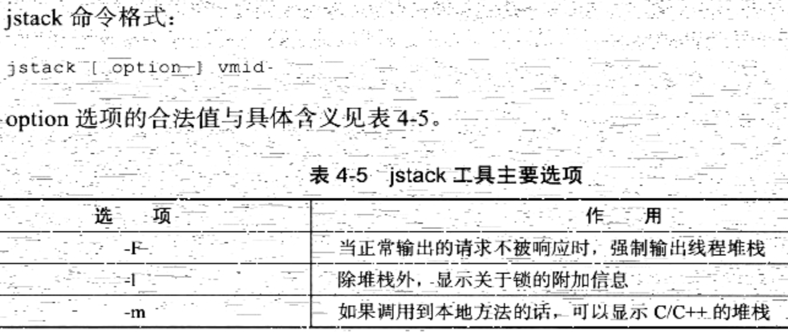

1.jps(JVM Process Status Tool)
列出正在运行的虚拟机进程。


2.jstat(JVM Statistics Monitoring Tool)
显示运行状态信息。


3.jinfo(Configuration Info for Java)
查看和调整虚拟机各项参数。

4.jmap(Memery Map for Java)
用于生成的堆转储快照。


5.jhat(JVM Heap Analysis Tool)
与jmap搭配使用，用来分析jmap生成的堆转储快照。
6.jstack(Stack Trace for Java)
用于生成线程快照。
